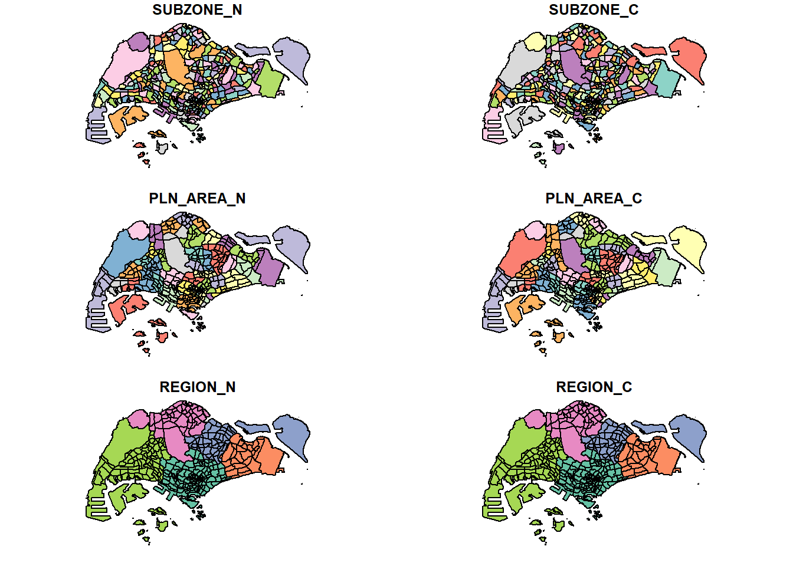

options(max.print=1000000)In-class Exercise 1: My First Date with Geospatial Data Analytics
Getting Started
The code chunk below load the following packages:
- tmap : for thematic mapping
- sf : for geospatial data handling
- tidyverse: for non-spatial data handling
pacman::p_load(tmap, sf, tidyverse)
# note : this is the R code for quatero, usually in R, we would have use library(tamp) etc
#pacman:: call the package. then p_load is a function within pacmanImporting Geospatial Data
Importing the Boundaries
The Masterplan 2014 Subzone Boundary is a shapefile that need to be imported. It will cut singapore into different subzones
i recall prof was saying we should project to Singapore 3414. but either code seem to work?
mpsz = st_read(dsn = "data/geospatial",
layer = "MPSZ-2019")Reading layer `MPSZ-2019' from data source
`C:\worksheep\ISSS624\In-class_Ex\In-class_Ex1\data\geospatial'
using driver `ESRI Shapefile'
Simple feature collection with 332 features and 6 fields
Geometry type: MULTIPOLYGON
Dimension: XY
Bounding box: xmin: 103.6057 ymin: 1.158699 xmax: 104.0885 ymax: 1.470775
Geodetic CRS: WGS 84mpsz <- st_read(dsn = "data/geospatial", layer = "MPSZ-2019") %>% st_transform(crs = 3414)
#WGS84 SVY21
#CRS coordinate representation system for Singapore is 3414Importing the cycling path
this is different from the earlier where this is SVY21
cyclingpath = st_read(dsn = "data/geospatial",
layer = "CyclingPathGazette")Reading layer `CyclingPathGazette' from data source
`C:\worksheep\ISSS624\In-class_Ex\In-class_Ex1\data\geospatial'
using driver `ESRI Shapefile'
Simple feature collection with 2558 features and 2 fields
Geometry type: MULTILINESTRING
Dimension: XY
Bounding box: xmin: 11854.32 ymin: 28347.98 xmax: 42626.09 ymax: 48948.15
Projected CRS: SVY21I think i get it, the difference is base on the original file. So for WGS84 or SVY21, it is due to the shape file’s original coordinate system? I don’t recall so though.
Importing Preschool Location
preschool = st_read("data/geospatial/PreSchoolsLocation.kml")Reading layer `PRESCHOOLS_LOCATION' from data source
`C:\worksheep\ISSS624\In-class_Ex\In-class_Ex1\data\geospatial\PreSchoolsLocation.kml'
using driver `KML'
Simple feature collection with 2290 features and 2 fields
Geometry type: POINT
Dimension: XYZ
Bounding box: xmin: 103.6878 ymin: 1.247759 xmax: 103.9897 ymax: 1.462134
z_range: zmin: 0 zmax: 0
Geodetic CRS: WGS 84the main diff is this is KML file instead of shapefile. but seems like i can still use st_read, just that for this i don’t need to specify dsn and layer.
Doing Some Initial Play with the Data
DataTable
st_geometry(mpsz)Geometry set for 332 features
Geometry type: MULTIPOLYGON
Dimension: XY
Bounding box: xmin: 103.6057 ymin: 1.158699 xmax: 104.0885 ymax: 1.470775
Geodetic CRS: WGS 84
First 5 geometries:glimpse(mpsz)Rows: 332
Columns: 7
$ SUBZONE_N <chr> "MARINA EAST", "INSTITUTION HILL", "ROBERTSON QUAY", "JURON…
$ SUBZONE_C <chr> "MESZ01", "RVSZ05", "SRSZ01", "WISZ01", "MUSZ02", "MPSZ05",…
$ PLN_AREA_N <chr> "MARINA EAST", "RIVER VALLEY", "SINGAPORE RIVER", "WESTERN …
$ PLN_AREA_C <chr> "ME", "RV", "SR", "WI", "MU", "MP", "WI", "WI", "SI", "SI",…
$ REGION_N <chr> "CENTRAL REGION", "CENTRAL REGION", "CENTRAL REGION", "WEST…
$ REGION_C <chr> "CR", "CR", "CR", "WR", "CR", "CR", "WR", "WR", "CR", "CR",…
$ geometry <MULTIPOLYGON [°]> MULTIPOLYGON (((103.8802 1...., MULTIPOLYGON (…head(mpsz, n=5)Simple feature collection with 5 features and 6 fields
Geometry type: MULTIPOLYGON
Dimension: XY
Bounding box: xmin: 103.6537 ymin: 1.216215 xmax: 103.8811 ymax: 1.29742
Geodetic CRS: WGS 84
SUBZONE_N SUBZONE_C PLN_AREA_N PLN_AREA_C REGION_N
1 MARINA EAST MESZ01 MARINA EAST ME CENTRAL REGION
2 INSTITUTION HILL RVSZ05 RIVER VALLEY RV CENTRAL REGION
3 ROBERTSON QUAY SRSZ01 SINGAPORE RIVER SR CENTRAL REGION
4 JURONG ISLAND AND BUKOM WISZ01 WESTERN ISLANDS WI WEST REGION
5 FORT CANNING MUSZ02 MUSEUM MU CENTRAL REGION
REGION_C geometry
1 CR MULTIPOLYGON (((103.8802 1....
2 CR MULTIPOLYGON (((103.8376 1....
3 CR MULTIPOLYGON (((103.8341 1....
4 WR MULTIPOLYGON (((103.7125 1....
5 CR MULTIPOLYGON (((103.8472 1....Plotting a Map
plot(mpsz)
plot(st_geometry(mpsz))
plot(mpsz["PLN_AREA_N"])
Changing the Projection
First we need to check the data
st_crs(mpsz)Coordinate Reference System:
User input: WGS 84
wkt:
GEOGCRS["WGS 84",
DATUM["World Geodetic System 1984",
ELLIPSOID["WGS 84",6378137,298.257223563,
LENGTHUNIT["metre",1]]],
PRIMEM["Greenwich",0,
ANGLEUNIT["degree",0.0174532925199433]],
CS[ellipsoidal,2],
AXIS["latitude",north,
ORDER[1],
ANGLEUNIT["degree",0.0174532925199433]],
AXIS["longitude",east,
ORDER[2],
ANGLEUNIT["degree",0.0174532925199433]],
ID["EPSG",4326]]actually after checking i saw that prof used another command to change the projection . What is the difference between st_set_crs and st_transform. from what is googled, st_set_crs just update the metadata but doesn’t change the coordinates itself
mpsz3414 <- st_set_crs(mpsz, 3414)st_crs(mpsz)Coordinate Reference System:
User input: WGS 84
wkt:
GEOGCRS["WGS 84",
DATUM["World Geodetic System 1984",
ELLIPSOID["WGS 84",6378137,298.257223563,
LENGTHUNIT["metre",1]]],
PRIMEM["Greenwich",0,
ANGLEUNIT["degree",0.0174532925199433]],
CS[ellipsoidal,2],
AXIS["latitude",north,
ORDER[1],
ANGLEUNIT["degree",0.0174532925199433]],
AXIS["longitude",east,
ORDER[2],
ANGLEUNIT["degree",0.0174532925199433]],
ID["EPSG",4326]]Preparing the Flow Data
Importing the OD data
First, we will import the Passenger Volume by Origin Destination Bus Stops dataset downloaded from LTA DataMall by using read_csv() of readr package
odbus <- read.csv("data/aspatial/origin_destination_bus_202308.csv")odbus$ORIGIN_PT_CODE <- as.factor(odbus$ORIGIN_PT_CODE)
odbus$DESTINATION_PT_CODE <- as.factor(odbus$DESTINATION_PT_CODE)Extracting the study data
For the purpose of this exercise, we will extract commuting flows on weekday and between 7 and 9 o’clock
origtrip_7_9 <- odbus %>%
filter(DAY_TYPE == "WEEKDAY") %>%
filter(TIME_PER_HOUR >= 7 & TIME_PER_HOUR <= 9) %>%
group_by(ORIGIN_PT_CODE) %>%
summarise(TRIPS= sum(TOTAL_TRIPS))
#for beginners, we may not want to use pipe %>%, we can chop up the code into individual blocks, to understand the output step by stepbusstop <- st_read(dsn = "data/geospatial", layer="BusStop") %>% st_transform(crs = 3414)
# dsn is data geospatial
mpsz <- st_read(dsn = "data/geospatial", layer = "MPSZ-2019") %>% st_transform(crs = 3414)
#WGS84 SVY21
#CRS coordinate representation system for Singapore is 3414Working with
For the purpose of this exercise